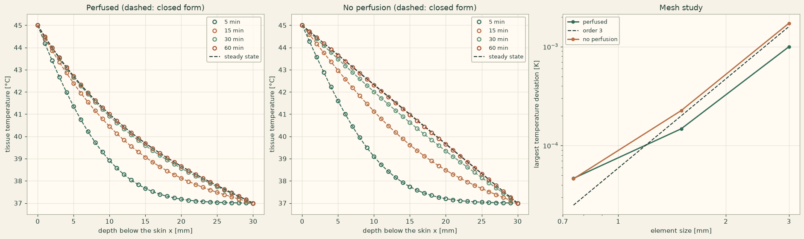

Docs › Examples › Pennes bioheat: heating perfused tissue
Bioheat transfer · 1D
Pennes bioheat: heating perfused tissue
A contact heater brings the skin to 45 °C over 30 mm of tissue, with and without blood perfusion, for one hour.
Run locally with OneSimulation. The example downloads are free. Running them requires an activated runtime. Runtime Alpha 0.2.1a7 · CPython 3.13 on macOS (Apple Silicon), Ubuntu 22.04 (x86-64), and Windows x64. Installation and activation · View pilot plans. Scope of the reference checks.


What it computes
OneSimulation solves the Pennes bioheat equation with its PennesBioheat model (perfusion towards the arterial blood temperature, temperature in K) on a planar tissue line with quadratic finite elements and BDF2 steps on three meshes.
What it checks
The temperature profiles match the closed-form steady state plus eigenfunction series within 5e-5 K on 40 elements (1e-3 K on 10); perfusion limits the 4 K heated zone after one hour to 10 mm against 15 mm without.
The notebook
The complete notebook, cell by cell. Run it to produce the figures and the comparison printout.
Blood flowing through the capillaries carries heat away from warm tissue and brings it into cold tissue. H. H. Pennes (1948) modelled this as a heat sink proportional to the difference between the local tissue temperature and the arterial blood temperature \(T_b\):
with the perfusion rate \(\omega_b\) (volume of blood per volume of tissue and second). Here a contact heater brings the skin surface \(x=0\) to \(T_s=45\) °C at \(t=0\), the deep tissue at \(x=L\) stays at \(T_b=37\) °C, and the metabolic heat \(Q_m\) is neglected, so the tissue starts in equilibrium at \(T_b\).
OneSimulation solves the equation with its PennesBioheat model (temperature in K, perfusion as the volumetric capacity rate \(\omega_b\rho_bc_b\), blood temperature) on a line through the tissue, with quadratic finite elements and BDF2 steps. Below, \(\alpha=k/\rho c\) is the thermal diffusivity and \(w=\omega_b\rho_bc_b/\rho c\) the perfusion rate.
| Boundary | Condition |
|---|---|
| \(x=0\), skin surface | \(T=T_s=45\) °C from \(t=0\) |
| \(x=L\), deep tissue | \(T=T_b=37\) °C |
Reference. H. H. Pennes, Analysis of tissue and arterial blood temperatures in the resting human forearm, J. Appl. Physiol. 1, 93-122 (1948); H. S. Carslaw and J. C. Jaeger, Conduction of Heat in Solids, 2nd ed., Oxford 1959, §3.4 and §15. With \(\theta=T-T_b\), \(m^2=\omega_b\rho_bc_b/k\) and \(\Delta T=T_s-T_b\) the solution is
Perfusion shortens the thermal penetration depth to \(1/m\) and lets the tissue reach its steady state faster, at the rate \(\alpha\pi^2/L^2+w\) instead of \(\alpha\pi^2/L^2\).
import numpy as np
from onesim.cad.d1 import Line
from onesim.meshing import StructuredLineMesher
from onesim.numerics import Numerics
from onesim.numerics.fem import FiniteElement, Lagrange, Nitsche
from onesim.numerics.linear import SparseDirect
from onesim.numerics.nonlinear import Newton
from onesim.numerics.time import BDF, BackwardEuler
from onesim.physics.biophysics import PennesBioheat
from onesim.simulation import PrescribedValueBoundary, Problem, Simulation
from onesim.simulation.initial_conditions import InitialValue
from onesim.visualization import plots, theme
theme.set()Tissue
Soft tissue 30 mm deep (density 1050 kg/m³, heat capacity 3600 J/(kg K), conductivity 0.5 W/(m K)) perfused at \(\omega_b=5\times10^{-4}\) 1/s by blood with \(\rho_bc_b=1060\cdot3770\) J/(m³ K); one hour of heating. The same layer without perfusion serves as the contrast.
depth, density, capacity, conductivity = 0.03, 1050.0, 3600.0, 0.5
blood, surface, perfusion = 310.15, 318.15, 5e-4 * 1060.0 * 3770.0
diffusivity = conductivity / (density * capacity)
cases = {"perfused": perfusion, "no perfusion": 0.0}
print(
f"thermal diffusivity {diffusivity:.3e} m²/s, diffusion time L²/α = {depth**2 / diffusivity / 60:.0f} min, "
f"perfusion time ρc/(ω ρb cb) = {density * capacity / perfusion / 60:.0f} min, penetration depth 1/m = {1e3 * np.sqrt(conductivity / perfusion):.1f} mm"
)
line = Line(start=(0.0, 0.0, 0.0), end=(depth, 0.0, 0.0))Simulation and mesh study
Each case on 10, 20 and 40 quadratic elements with 1800 BDF2 steps of 2 s.
models = {
name: PennesBioheat(
domain=line.line,
density=density,
heat_capacity=capacity,
conductivity=conductivity,
perfusion_capacity_rate=w,
blood_temperature=blood,
)
for name, w in cases.items()
}
runs = {
(name, cells): Simulation(
problem=Problem(
name=f"Pennes bioheat, {name}",
geometry=line,
physics=(model,),
boundary_conditions=(
PrescribedValueBoundary(
physics=model,
boundary=line.boundaries.start,
value=lambda time, **_: {"temperature": surface},
),
PrescribedValueBoundary(
physics=model,
boundary=line.boundaries.end,
value=lambda time, **_: {"temperature": blood},
),
),
initial_conditions=(InitialValue(model.temperature, blood),),
),
mesh=StructuredLineMesher(cells=cells).generate(line),
numerics=Numerics(
spatial=FiniteElement(
element=Lagrange(order=2), boundary_enforcement=Nitsche()
),
nonlinear_solver=Newton(linear_solver=SparseDirect(), jacobian="analytic"),
time_integrator=BDF(order=2, startup=BackwardEuler()),
),
).run(start_time=0.0, end_time=3600.0, time_step=2.0)
for name, model in models.items()
for cells in (10, 20, 40)
}Closed-form solution
The steady profile and 2000 terms of the eigenfunction series.
def pennes(x, t, w):
m, n = np.sqrt(w / conductivity) + 1e-12, np.arange(1, 2001)[:, None]
series = (
2
* n
* np.pi
/ ((n * np.pi) ** 2 + (m * depth) ** 2)
* np.sin(n * np.pi * x / depth)
* np.exp(
-(diffusivity * (n * np.pi / depth) ** 2 + w / (density * capacity)) * t
)
).sum(axis=0)
return blood + (surface - blood) * (
np.sinh(m * (depth - x)) / np.sinh(m * depth) - series
)Comparison
The temperature on a fine line through the tissue at 5, 15, 30 and 60 minutes, and the largest deviation over these times for each mesh.
x = np.linspace(0.0, depth, 301)
points = np.column_stack((x, np.zeros_like(x), np.zeros_like(x)))
moments = (300.0, 900.0, 1800.0, 3600.0)
profiles = {
key: {
t: np.asarray(
r.field(models[key[0]].temperature).evaluate(points, time=t)
).reshape(-1)
for t in moments
}
for key, r in runs.items()
}
print(
"case elements largest deviation [K] at t = 60 min: T(5 mm) [°C] series [°C]"
)
for (name, cells), profile in profiles.items():
deviation = max(
np.abs(profile[t] - pennes(x, t, cases[name])).max() for t in moments
)
print(
f"{name:15s} {cells:8d} {deviation:22.2e} {profile[3600.0][50] - 273.15:28.3f} {pennes(x[50:51], 3600.0, cases[name])[0] - 273.15:13.3f}"
)
errors = {
name: [
max(np.abs(profiles[(name, c)][t] - pennes(x, t, w)).max() for t in moments)
for c in (10, 20, 40)
]
for name, w in cases.items()
}
print(
"observed orders:",
{
name: [round(float(np.log2(e[i] / e[i + 1])), 2) for i in range(2)]
for name, e in errors.items()
},
)
steady = {name: pennes(x, 1e9, w) for name, w in cases.items()}
print(
f"depth where the tissue is heated by 4 K after one hour: perfused {1e3 * x[np.argmax(profiles[('perfused', 40)][3600.0] < blood + 4)]:.1f} mm, "
f"without perfusion {1e3 * x[np.argmax(profiles[('no perfusion', 40)][3600.0] < blood + 4)]:.1f} mm"
)
print(
f"one hour reaches {np.trapezoid(profiles[('perfused', 40)][3600.0] - blood, x) / np.trapezoid(steady['perfused'] - blood, x):.1%} of the "
f"steady heat content with perfusion, {np.trapezoid(profiles[('no perfusion', 40)][3600.0] - blood, x) / np.trapezoid(steady['no perfusion'] - blood, x):.1%} without"
)Figure
The heating profiles with and without perfusion against the closed form, and the mesh study.
fig = plots.figure(1, 3, size=(17, 5))
for index, name in enumerate(cases):
plots.line(
points={
f"{t / 60:.0f} min": (1e3 * x[::10], profiles[(name, 40)][t][::10] - 273.15)
for t in moments
},
reference={
f"{t / 60:.0f} min": (1e3 * x, pennes(x, t, cases[name]) - 273.15)
for t in moments
}
| {"steady state": (1e3 * x, steady[name] - 273.15)},
xlabel="depth below the skin x [mm]",
ylabel="tissue temperature [°C]",
ylimits=(36.5, 45.5),
title=f"{name.capitalize()} (dashed: closed form)",
legend="upper right",
ax=fig[index],
)
plots.convergence(
1e3 * depth / np.array([10, 20, 40]),
{name: np.array(e) for name, e in errors.items()},
order=3,
xlabel="element size [mm]",
ylabel="largest temperature deviation [K]",
title="Mesh study",
ax=fig[2],
)
plots.show()Going further
Add the metabolic heat as a further source term, \(Q_m/\rho c\), and the equilibrium shifts to \(T_b+Q_m/(\omega_b\rho_bc_b)\). A time-dependent surface temperature turns the case into the periodic skin-heating problem, whose penetration depth depends on both the frequency and the perfusion. Thermal dose (CEM43) follows from the computed history by integrating \(R^{43-T}\) over time at each depth.